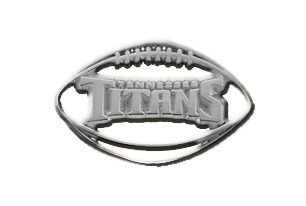

The cowboy hat is a significant figure in the city of nashville because it signifies Nashville's country music. This piece was chosen to be an element that appears to represent Nashville Music and is worn my many Nashville country music artist and Nashvillians.
Nashville is known to be a musical city, but its main music focus is Country Music. So this piece was chosen because my people come to this city to be discovered for their talents.

The Titan's Stadium is home for the Nashville football team called, "The Titans." Many Nashvillians come to many games to show love to their football team. So this piece signifies Nashville's top football team, "The Titans."
Many of Nashville's Country Music Artist are known for their musical talents when it comes to playing the guitar. So this piece also is known heavily when it comes to Country Music.
The Cowboy Boot is also worn by many of Nashville's Country Music Artist. This fashion element has become so much of a fad, that many Nashvillians wear them for their everyday where. This piece is very popular when it comes to fashion is Nashville TN.
The Parthenon is a Nashville landmark that many tourist from around the world come to see. This is a full replica of the Parthenon in Athens. So this piece is very special when it comes to history in general for Nashville and the world.